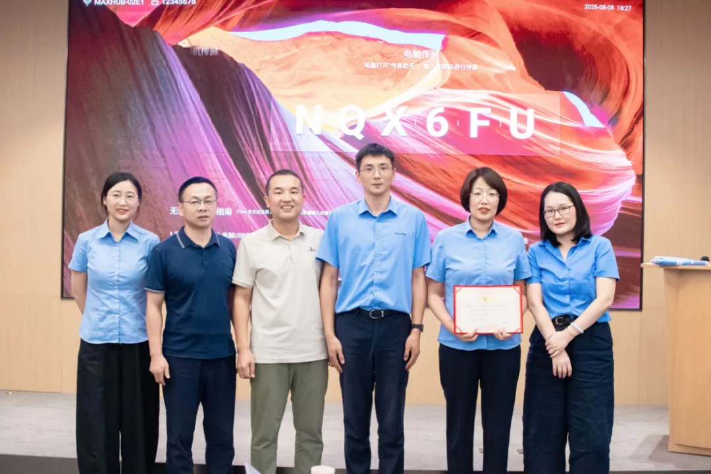
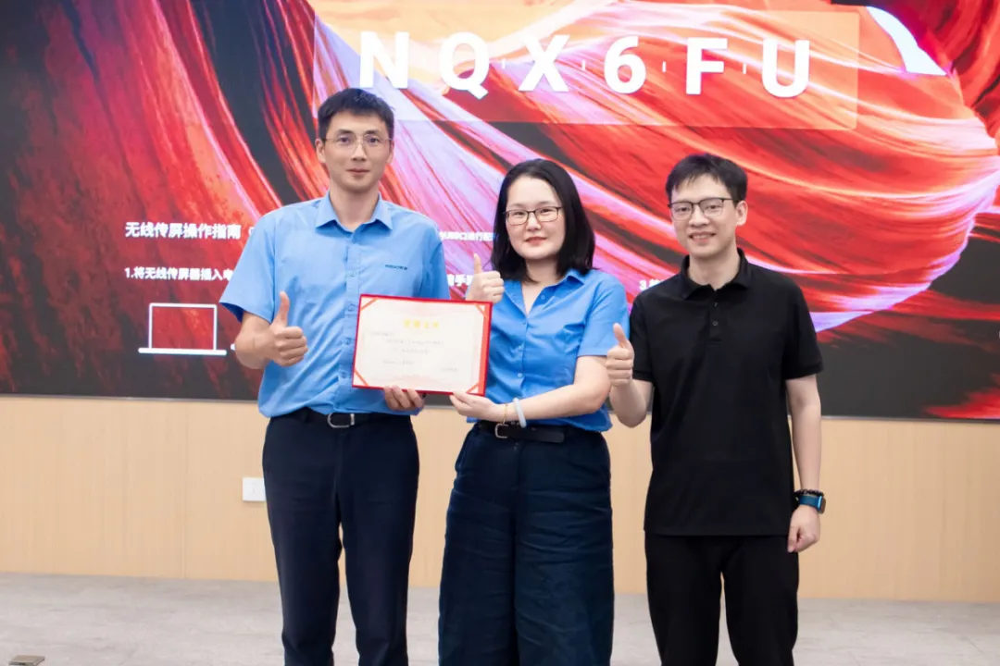

真实问题
2026 年 8 月 7 日至 8 月 8 日，威高骨科组织 25 名中高层与骨干参加工作坊，覆盖管理、研发、生产、运营、政府事务、财务、战略、人力资源与营销管理等 9 个部门。目标是让 AI 进入经营、生产、政策准入与组织协同流程，找到值得持续投入的业务场景。
2 天，39 件作品。从工具体验走向真实业务实验。

2026 年 8 月 7 日至 8 月 8 日，威高骨科组织 25 名中高层与骨干参加工作坊，覆盖管理、研发、生产、运营、政府事务、财务、战略、人力资源与营销管理等 9 个部门。目标是让 AI 进入经营、生产、政策准入与组织协同流程，找到值得持续投入的业务场景。
工作坊全程使用脱敏数据与案例，以黑客马拉松实战推进创作、展示与复盘。成果集中在生产运营与供应链、政策准入与市场情报、经营费用与决策分析、组织协同与管理自动化四类场景。现场形成可追踪、可复盘、可继续评估的应用雏形。
共完成 39 件作品，其中 21 件进入团队或公司业务成果池，8 件列为 A 级优先继续推进成果。原文建议选择 2–3 个高价值场景继续试点，将雏形推进成可复盘、可复制、可扩展的 AI 工作流。工作坊阶段成果不等于已经完成生产部署。

